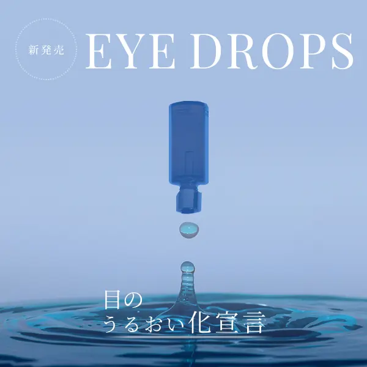
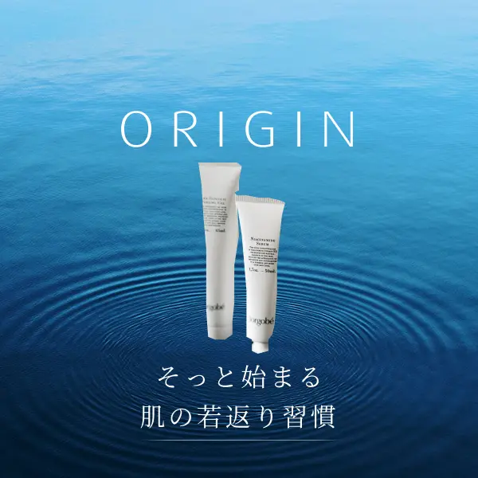
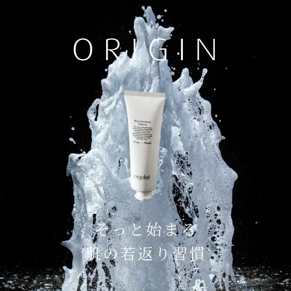
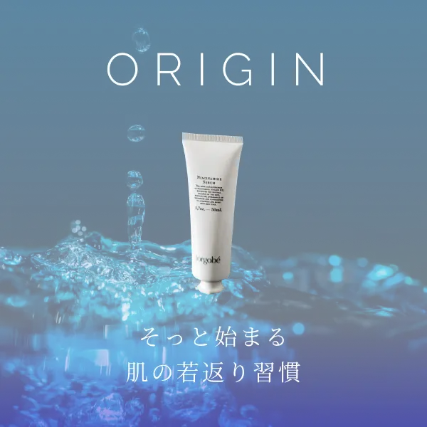
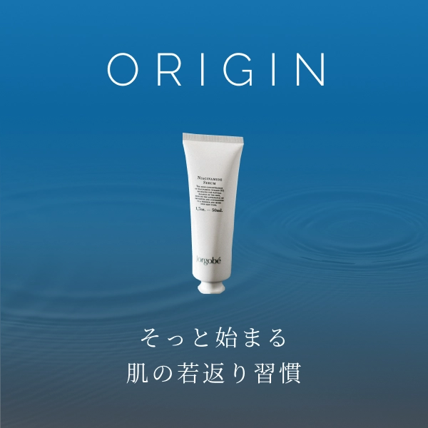

化粧液のブランディングバナー
原寸大バナーと制作過程をご覧になれます。

30代〜50代の女性をターゲットに、化粧液のブランディングバナーとして制作しました。
キャッチフレーズは「そっと」始まる肌の若返り習慣。売り込み感を排除して優しい印象にしました。
透明感と清潔感、上品で落ち着いた感じを表現するための青のグラデーションを使用しています。
水で透明感や清潔感を演出していますが、
優しくそっと触れるイメージを出すために波紋の写真を薄くして使用しました。
Before → After
バナーの改善過程です。
-
Before

-
After
Before：水滴の方が印象の強い画像となってしまいました。
After：水面の波紋の写真を薄くして背景画像としました。
結果：透明感がありながら、優しい印象で商品が主役のバナーとなりました。
Before：上部が窮屈で余裕が無い、新発売のバッジもチープな印象を受けてしまいます。
After：余白をゆったりと取り、フォントもすっきりとしたものに変更しました。
結果：上品で商品イメージのブランディングに成功しました。
History
細かい制作過程です。
-

1.バナー制作講座の課題に沿って作ったものです。（キャッチフレーズや商品名などは講座から変更しました）
-

2.水の流れで清潔感や透明感を出そうとしましたが、勢いのある写真で目的の優しいイメージと合わないものとなりました。
-

3.噴水から水滴が落ちる画像に変更しましたが、まだ背景の水が目立った感じになってしまいました。
-

4.過去から未来の時間を水の波紋で表現しながらも、水の印象を弱くするために写真の透明感を高くして完成です。